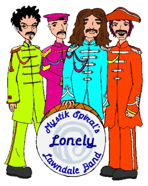

OUR DRUMMER'S RUSTY VAN by JAK981125 Note: You will recognize some songs here from former fics of mine. I took some liberties when it came to the music I used, as you will see. Narrator: Once upon a time, or maybe twice there was an unearthly paradise called Paperland.* *blatant inside joke, if you don't know, don't ask opening scene with children and adults happily doing what they please. now ain't that sweet? Narrator: Ten thousand megabytes beneath the cyber-sea it lie or lay, I'm really not sure. I flunked English. this touching scene goes on for several seconds with truly cool background music from They Might be Giants. cut to the nearby mountains. the sound of evil laughter may be heard Chief Pink Meanie: Ah, there it is, Paperland. It makes me sick, it does. So much happiness and harmony. All that and yet not once ounce of profit for us. We must do something about that. IT MUST BE DESTROYED! Bob, are we ready? Bob (short for boy on bike): Yes your pinkness! Chief Pink Meanie: WHAT?! We pink meanies only take whatever for an answer! Do you understand? Bob: Whatever, sir. CPM: Ah, excellent. Are the evil bean counters ready? Bob: Whatever, sir. CPM: The pop stars? Bob: Whatever, sir. CPM: The dumb jocks? Bob: Whatever, sir. CPM: The teeny boppers? Bob: Whatever, sir. CPM: Ah, excellent. My dear little sycophants, today, Paperland goes pink. Attack! the pink meanies attack and the people try to flee, but they are turned into teeny-boppers and psuedo-intellectual posers. one man, however, manages to escape. nearby, a band that was performing, Mystik Spiral's Lonely Lawndale Band, is too distracted by their music to notice what's going on. CPM: Ah! Someone is escaping! Bob, get him! as Bob tries to catch up, the running man starts to recite multiplication tables Bob: Ow! Knowledge! Bob collapses and the man gets away. as Bob retreats he sees Mystik Spiral's Lonely Lawndale Band and pulls out a remote control and hits the mute button. they find themselves inside a giant TV with the mute on. Bob laughs and then turns the set off. meanwhile the escaping man approaches a group of men who are listening to Sitar music. Man: Lord mayor Rich! Sir! The meanies are coming! Mayor: The meanies will be your best friends if you interrupt me during my Ravi Shankar break ever again. Besides, this place is a safe haven. all of the sudden three of the men turn into VJs Mayor (jumps into JAK's arms*): The meanies! Run for your life! *No, this is not some sick fantasy of mine, it happens in the movie, you sickos! they run until they reach a big black van Mayor: Four score and five seasons ago our people made it here in this black van called The Tank. Young JAK, you must get help. Go, I will hold them off. JAK drives off in The Tank. the mayor is attacked and turns into a Back Street Boys fan. as the van drives through the cyber world, we hear the music begin. SONG-Our Drummer's Rusty Van to the tune of Yellow Submarine Trent (singing) In the town where I reside There's a van parked up the street Smells like trash, and rotten eggs And the high school's mystery meat This rusty van belongs to Max People think that we must be stoned Because we love this rusted heap It's repulsive but it's home We all live in our drummer's rusty van Our drummer's rusty van Our drummer's rusty van We all live in our drummer's rusty van Our drummer's rusty van Our drummer's rusty van Our houses taken by the bank All us living in the Tank In Max's case, it was his dad Trent plays a few notes in animal sounds on his midi keyboard. We all live in our drummer's rusty van Our drummer's rusty van Our drummer's rusty van We all live in our drummer's rusty van Our drummer's rusty van Our drummer's rusty van Here the notes are replaced by similar sounds made by the van falling apart. As we live inside this van We're all doing what we can To make a hit before next week It will rain then; the roof leaks We all live in our drummer's rusty van Our drummer's rusty van Our drummer's rusty van We all live in our drummer's rusty van Our drummer's rusty van Our drummer's rusty van the van drives through the streets of Lawndale. another song begins. SONG-Mrs. Johansen to the tune of "Eleanor Rigby" Jesse's voice (singing): Ahhh! Look at all the scary people! Ahhh! Look at all the scary people! Mrs. Johansen, makes a small earthquake whenever she walks Lives on my block Waits by window to rob any girl scouts who sell door to door What the heck for? All the scary people, where do they all come from? All the scary people, where do they all belong? A. De Martino writing the words to a lesson that no one will hear Nine months a year Look at him working into the night till he's giving himself a near-fit Why don't he quit? All the scary people, where do they all come from? All the scary people, where do they all belong? Ahhh! Look at all the scary people! Ahhh! Look at all the scary people! Mrs. Johansen, I do feel bad for her knowing that she won't live long Too many Ding-Dongs A. De Martino, while teaching some jocks he went into to arrest Who would have guessed? All the scary people, where do they all come from? All the scary people, where do they all belong? cut to scene of Max standing by a street corner. Max: It's amazing how dead this town is. I'd give nearly anything to lighten things up a little. And I'm a little lonely too. The first song you heard was inaccurate. Penny went back to Honduras. Jesse and Nick moved in with Trent and Jane and I've been all alone. They won't let me move in of course, apparently I talk in my sleep. That's silly, that the kind of thing loony people do. Max's brain: You tell 'em Max. Max: Quiet you! Max's brain: Whatever you say Max. I'll just go talk to two of your other personalities. Max: You do that. a girl walks by and give Max an odd look because she heard him talking to himself. Max: I'm as sane as the next man for just a moment his eyes turn into spirals and he get a spacey look. Max: Bet you always wondered how our band got it's name. the Tank drives by slowly. Max: Hey, that van looked awfully familiar. Or maybe the familiar just looks awful. Deep, aren't I? Tank drives by again. Max: It can't be a drive-by, he hasn't shot me yet. Maybe it's the Libyans! Must protect flux capacitor! Run Marty, run! he runs away but the Tank follows at a distance. he runs up to a cop. Max: Would you believe me if I told you I was being followed by a van driven by Libyans? Cop: No, no I would not. Hey, do I know you? Max: Why no officer, you've never arrested me for vagrancy before. Oops! Max runs like heck. Cop (yells after him): You're Mr. Clean, aren't you? Max (running to Trent's house): When I said I wanted excitement I meant the good kind like a nuclear meltdown. Not the bad kind. Maybe it's just the tabloids following me. pauses Max: I'd prefer the Libyans. he runs inside. JAK parks the van and knocks on the door. JAK: Help! Max (through the mail slot): Do you see a green hand in the window? JAK: Oh, uh... big emergency.....um...uh...pop music..... uh, PINK MEANIES! Max: Wow, that sounds serious. Have you called a painter? JAK: No, you don't get it! The meanies are attacking! Max opens the door. Max: Well why didn't you say so? Come on in, we'll get my friends. they go to Trent's room. he wakes up and walks around the room like Frankenstein (grunting just like him as well). then he picks up a cup and drinks it, transforming him back to his normal self. Trent: Sorry man, I'm a real monster without my coffee. Max: Listen to JAK here. JAK: Oh, uh... big emergency.....um...uh...pop music..... uh, PINK MEANIES! Max: So what do you think? Trent: Max, I thought you promised me you wouldn't bring strange people into my house anymore after that last one turned out not to be Inspector Cluseau. Max: Oh sure, throw that one back in my face again. It looked just like him. How was I supposed to know it was Daria's dad in a detective's outfit? Trent: I had just finished getting that guy out of my house and then you come along and invite him back in. Dude, I can only take so many military school stories in one day. Max: Let's get Nick. What day is it? Trent: Friday. Max (smiling): I know you don't smoke weed, I know this... Trent: You know you do lousy Chris Tucker impressions, you know this... Max: Ok fine. Where would Nick be on a Friday? Trent: Same as any other day, asleep! If you listen real carefully you can hear him sing in his sleep. indeed we can hear singing coming from somewhere in the room. SONG-Batman to the tune of "Taxman" Nick (singing): All Gotham's crooks seem to fear me Yes they're as scared as they can be Cause I am Batman Yeah I am Batman If the Riddler violates his bail I'll lock his riddling butt in jail Cause I am Batman Yeah I am Batman If you rob a bank, I'll hunt you down If the Joker's lose, I'll get that clown If you burglarize, I'll make you frown If the Penguin's free, He's going down Batman! Cause I am Batman Yeah I am Batman Don't ask me what I do at night (ha ha, Mr. Gracen) I run around while wearing tights (ha ha, Mr. Wayne) Cause I am Batman Yeah I am Batman Now my advice for those who steal Best watch your back cause I'm for real Cause I am Batman Yeah I am Batman And most heroes got nothing on me Max: I talk a little in MY sleep and I'm banned from the house, yet you tolerate this? Trent: Yeah, but you gotta admit, it was a catchy tune. Trent pours coffee on a pile of clothes on the floor which suddenly moves and Nick jumps up. Nick: Ow! Trent that burns! You scalded me! So... What's new with you? Trent: Listen to JAK here. JAK: Oh, uh... big emergency.....um...uh...pop music..... uh, JAK, Trent, and Max: PINK MEANIES! Nick: Cool! Let's get Jesse. I think he's in the basement they go downstairs where Jesse is head banging as he listens to loud rock music. Trent: Jesse! Jesse can't hear him. Trent (even louder): Jesse! still can't hear him. Trent unplugs the stereo. Trent: Jesse! Jesse seems to think the stereo is still on and continues head banging. JAK, Trent, and Max: JESSE! Jesse: What? Not a pink meany attack, is it? Dang, and I had plans today. Trent (suspiciously): What plans? Jesse: I planned to do nothing. pause. Jesse: Let's go. they go outside and climb into the Tank (the one from the cyber world that JAK came in, not Max's) Max: Wait a minute, you came in this? It's just like mine! Exactly in every way. JAK: That's not surprising. You have an alternate self in my world... Max (ignores him): It even has the same week old salami by the dashboard. JAK: True but we'll have to take mine. Max: Why? JAK: Can yours travel across dimensions into new and strange worlds? Nick: Hey, don't underestimate the Tank. If the sucker's leaking enough exhaust you'd be amazed the interesting and scary places it can take you. Trent: We do generally try to prevent that sort of thing though. You know, the whole death thing. Jesse: How do you start this thing, anyway? JAK: Um, you turn the key. Jesse: Somehow I was expecting something a bit more dramatic, but ok, let's go. the Tank rumbles away. sound samples from "A Day In Our Lives" play and the scenery melts away. Trent: Wow, so where are we? JAK: The sea of lawyers. Best watch what you say here. They may sue you and FOX your website. A lawyer outside: That sir is slander against FOX and as their legal counsel... JAK: Pay him no mind boys. They talk big but they're harmless. All the lawyers: Oh yeah?! the lawyers turn into werewolves and attack the van. JAK doesn't notice at first. Trent: Um, JAK, is this van sturdy? JAK: I think so, why? Trent: No reason. JAK (looks out his side window and does a double take): Great Caesar's ghost! Jesse: Close dude, but they're werewolves, not ghosts. And as for Caesar, that's a salad dressing, dude. Werewolf voice: As legal counsel for Bill and Ted... I SENTENCE YOU TO DIE! Jesse: I thought only judges could do that. Nick: Hardly seems a good time for technicalities, man. Max: Ah! Save the women and children first! he quickly pulls on a kiddie-style sailor suit and a giant lollipop. JAK: Dang, and here I am without any silver bullets. Jesse: Yeah, I know what you mean. I could use a cold one myself. JAK: Cold one? Jesse! Jesse: What? Oh yeah, the lawyers. Nick: I don't think those werewolves will give us anymore trouble. JAK: Why's that? Nick: It would appear we just entered the sea of fire hydrants. JAK: You mean... Nick: Yup, the canine instinct took over. the van goes through a tunnel. Trent: Ok, where are we now? JAK: It would appear to be the sea of animation. various cartoon characters can be seen all over. Nick: Hey if this is a sea, where's all the water? JAK: We didn't pay the bill. Nick: I can relate. SONG--Fanfiction Writer to the tune of "Paperback Writer" Jesse (singing): Fanfiction writer Dear sir or madman will you read my fic It took me days to write cause my mind is sick It's based on a Beatles film called Yellow Submarine And I need a life so I want to be a fanfiction writer Fanfiction writer! It's a crazy story of a lazy band They've been called to go and rescue Paperland If you like this story you're as crazed as me But I need a chance just to prove that I'm a fanfiction writer Fanfiction writer! Fanfiction writer Do you like my writing? I could write some more I've got too much free time cause my life's a bore So sit back and read, hope you all enjoy It's a dirty job but I've got to be a fanfiction writer Fanfiction writer! If you like this story, I hope you'll write reviews Cause I'm gonna haunt you if you should refuse And if that don't scare you then perhaps this will: I will never quit my attempts to be a fanfiction writer Fanfiction writer! Fanfiction writer Fanfiction writer Fanfiction writer Fanfiction writer Fanfiction writer Max is still wearing the little kids outfit. Max: Where are we headed now, JAK? as he said this he turns into a kid. Max: Oh, where'd I get the lolly from? everyone turns into a kid Nick: Hey, I want a lick! Max: No way man, I don't want your cooties. Nick: Oh, yeah.... well... I didn't want your dumb lollipop anyway. he starts to fight back tears. Max: Oh, I'm just kidding. Here you can have it. as Nick reaches for it he pulls it back and laughs at Nick, causing Nick to lose his temper and attack Max. Trent: They're gonna kill each other. Jesse: Cool! Kick his butt Nick! Trent: Aw... You said the b word. I'm telling. JAK: I don't think we're supposed to be doing this. Hey, this van doesn't have a driver. It's going in reverse. No wonder we're getting younger. Jesse: So drive it forward. JAK: I can't. I'm not old enough to drive. Jesse: Aw, what's the matter, JAK? You chicken? Bawk, bawk! JAK: Am not! Jesse: Are too! JAK: Am not! Am not! Jesse: Are too! Are too! JAK: Am not times infinity! Jesse: Are too times infinity plus one! Trent: Wow, this is getting serious! JAK: Hey, you can't go past infinity, you poopey-head! Jesse: Oh yeah, booger brain? I triple dog dare you to drive the van! for a second everyone drops what they are doing out of shock at the use of the deadly triple dog dare. Trent: Don't let him use that to trick you into licking any flagpoles. JAK gets up to the front seat. JAK: I can't reach the pedals. Jesse: No problem. Jesse ducks below the driver's seat and hits the gas. the boys all rapidly age. JAK: Stop! Jesse, that's too much! by the time Jesse lets go they are all old men. Trent: Why do I suddenly feel the urge to watch Matlock? Max: Oh no! I'm old! And I never had a girlfriend! Oh, a lolly! Nick: Gimme that you old codger! they fight again JAK: What do we do now? in the background we hear Max Max (voice): Ow, ya broke my hip. Alright, your bony old butt is going down. Jesse: Sing. Works for me. music begins. SONG--When I'm Twenty-Four to the tune of "When I'm Sixty Four" Jesse (singing): When I get older, hearing impaired One more year from now Will they still be crowding to see Spiral play Lines ten blocks long every day Will I be rocking 'till quarter to three Or working in a store Will I be rocking Or will I be stocking When I'm 24 Don't know what I'll do If the fans still want me I still want them too I could be angry, blowing a fuse If the fans were gone We will make a hit before we turn 35 If not we will drink cyanide Wrecking our hearing as well as young minds There's a lovely chore Will I be rocking Or will I be stoking When I'm 24 Every weekend we will play our hearts out At the good old Zon club For the next ten years It's darker than a cave But they'll remember us Because we rarely bathe Send me a vision, show me a sign Tell me what to do Is it true that rock and roll is here to stay Yes/No? How long? What will it pay? Will we hit big time like Beatles or Queen Or working in that store Will I be rocking Or will I be stoking When I'm 24 JAK: That was nice, Jesse. Fat lot of good it did though. Jesse: What are you talking about? We're back to normal again. Trent: Cool. For one scary minute there I almost had an urge to buy a town car. everyone gasps. Max no longer has his sailor suit or lolly. Nick: Where are we now? JAK: The sea of Karma. another song begins. SONG--Only A Messed-Up Song to the tune of "Only A Northern Song" Nick (singing): If you're listening to this song You may think the writer hit the bong But you're wrong I'm just naturally odd If you hear these parodies You may think the writer's mind's diseased But it's not OK, maybe it is It doesn't really matter if I rant and rave Live in a cave Or talk to sock puppets As it's only a messed-up song It doesn't really matter if I sleep till noon Or watch cartoons Or rant at MTV When it's only a messed-up song If the man I'm speaking of Sounds like he just needs a little love You're correct You know we all do And I told that we all do JAK: I hate to burst your bubble lads, but we seem to have entered the sea of annoyances. Nick: Hey Max, you should feel right at home here. Max: Quiet you! as he says this he falls out the back of the van. Nick: Oh no, my oldest and dearest friend is sure to be annihilated by those home shopping channel demons. This is awful. I have got to get this on film. Trent: Well, what do we do? Should we save him? Jesse: I guess. Nick: Yeah, but only if he gives me some of that lolly. Jesse: Um, Nick, I ate it while you guys were fighting. Nick: Remind me to beat you up later. Alrighty boys, we have a drummer to save. JAK: Look out, it's the dreadful infomercial vampire! All: AH! the monster grabs Max. Monster: Oh, oh! You just gotta appear in this new cooking infomercial with George Foreman. Max: Oh for the love of Garfunkle, SAVE ME! Trent: Ok, this situation has reached desperate measures. Even Max doesn't deserve this. Trent, Nick and Jesse race out of the back of the van and grab Max. They run back with the monster hot on their heals pleading. Monster: Please don't do this to me. I'm so desperate I had to appear in one of those 10-10 commercials. Trent (running): I'm touched. Jesse: (running): How are the mighty fallen. they get back inside. Trent: Hit the gas man. JAK floors it and they go through another tunnel into complete whiteness. JAK: Whoah! Where are we? Trent: Um, don't you know? JAK: No, I was just trying to get as far away from the monster as I could. I wasn't watching where we were going. Wait a minute, I think this may be the sea of ghosts! Jesse: Any of them related to Great Caesar? the Tank stalls. JAK: Dang it. And here we are several dimensions away from a garage. Trent: And my sister's glue gun. Jesse: And AAA. Max (with a desperate look on his face): And a bathroom! Nick: I don't know, I kind of like it here. Seems like nothingness. So logically if nothing happens here, aside from the van, nothing bad could happen. Max: Nothing good either. Nick: At least we would break even. Jesse: That would be a first. Trent: Hey, who's that little old man? Jesse: Trent, wrong movie. Trent: No, I really mean who's that little old man over there? the figure comes closer. Nick: That's not a little old man, that's a tall young woman. Max: Correction, a woman who's tall and trying very hard to look young. Woman: If it ain't jiggy, ain't edgy, I don't want it. Jesse: Sound advice. Woman: My gosh, are you guys going to a costume party? Nick: No, we're going to go save a utopian world from being destroyed by pink meanies. Wanna come along? she looks at the Tank. Woman: Ew. In that? With you guys dressed like this? No way. And pink? So last year. we hear an Eep! in the distance from Quinn. Woman: I'm Val. she gets blank stares. Val: As in Val. Jesse: I'm Jesse. As in Jesse. aside to his friends he says: Jesse: I guess we gotta speak the local lingo. Val: Are you famous? Because I don't think I've ever heard of you. Oh gosh, have I fallen that far behind since I was imprisoned here? Nick: You're a prisoner? Max: Looks to me like the only prison you have is self-inflicted. Trying as hard as you do to stay young-looking and cool has got to be a harsh jailer. Val: Hey, I don't have to try in order to be young and cool. I am young and cool. I'm edgy, darn it! Max (smirking): Hey, didn't edgy go out of style last week? Val freaks out. Max smirks. Trent: Max, that wasn't very nice. Max: Well neither is she. Jesse: Hey Val, you sure you don't wanna come with us? Riding with a band isn't that bad. Val cheers up. Val: You guys are in a band? Cool. Maybe this is the new style. Jesse: Well, you know, we had to change our style. Max: Or we'd have had to go into exile. Nick: Haven't you ever heard about us? Trent: We're Mystik Spiral. Max: We're criminales. Val: Do you have a lot of fans? Nick: Sure. Max: Don't you hear what they say about us? SONG--Nowhere Band to the tune of "Nowhere Man" Trent and the band members (singing): They're a real nowhere band Singing for their nowhere fans Writing all their nowhere songs for nobody They don't have a dime to spare Their career ain't got a prayer Have no jobs but they don't care. No way. Nowhere band, please listen That network you've been dissing MTV, we hope it's death will come by your hands Really lack songwriting skills Really could not pay the bills Have you ever cleaned your van at all? Nowhere band, don't worry If your vision gets blurry Get some air, you're spending too much time in your van Ah, la, la, la, la Have a narrow point of view Maybe they should get a clue Say they have too much to do to work Nowhere band, so lazy Drive their fans so crazy Nowhere band, can't go near a bookstore because they were banned Ah, la, la, la, la They're a real nowhere band Singing for their nowhere fans Writing all their nowhere songs for nobody Writing all their nowhere songs for nobody Writing all their nowhere songs for nobody Val: Wow, it's not hip or jiggy. It's downright...unconventional. But I like it. Trent: So you wanna come with us? Val: Sure. But I'm not a groupie. I don't date band members, got it? as she walks towards the van she doesn't notice the boys breathe a sigh of relief. JAK: I think I fixed the van. Come on. they all pile in and take off. Val: How do you guys stand it in here? I mean it's dirty, it's smelly, it's cramped... Jesse: It's home. Max: You mean it was, Benedict Arnold. Trent: Hey guys, look at this. they look out the window to see giant heads from Easter Island sticking out of the ground all over. Nick: Wow, I have got to get one of these and bring it home. It would look so good in Trent's room. Trent: My room? Um, do I get a say in that? Nick: No. he and the other band members and Val get out. JAK: Help, this crazy thing has a mind of its own, it's driving itself! the van drives away. Trent: Just like the real Tank. Now how are we gonna get to Paperland? Jesse: This place seems a little odd. Even for me. Nick: Hey guys, check it out. they all run over to see one of the statues has opened its mouth. It gets wider and wider as the statue grows until it is huge. all of the sudden a multitude of psychedelic images appear in the mouth. after these images we see a small pile of bones. slowly the bones turn into a little girl who seems confused. Trent climbs inside the mouth and starts dancing with the girl. SONG--Lucy In The Ground With Fossils to the tune of "Lucy In The Sky With Diamonds" Trent (singing): Picture yourself on a dig in East Africa A thousand degrees, and that's in the shade Suddenly yell out, they come running quickly You dug up some human remains 60% of the body is missing Still can't find most of her head Look at the girl who was only pint sized Then you're gone Jesse (singing): Lucy in the ground with fossils, Trent and Jesse (singing): Lucy in the ground with fossils, Lucy in the ground with fossils, Aaahhh! Trent (singing): Follow your fame as your find gets attention Discrediting those who say "Darwin lies!" The skeleton measure a bit less than four feet I guess this chick wasn't too high Newspaper writers appear on your porch Waiting to hear what you'll say Sneak out the back 'cause you can't stand the crowds Then you're gone Trent and Jesse (singing): Lucy in the ground with fossils, Lucy in the ground with fossils, Lucy in the ground with fossils, Aaahhh! Trent (singing): Watch as your find is placed in a museum You wondering what she was like when alive Suddenly wonder what they'll say about you A million years after your life Trent and Jesse (singing): Lucy in the ground with fossils, Lucy in the ground with fossils, Lucy in the ground with fossils, Aaahhh! Lucy in the ground with fossils, Lucy in the ground with fossils, Lucy in the ground with fossils, Aaahhh! in the closing notes the girl plants a peck on Trent's cheek and then climbs onto a horse and rides off into the sunset. she waves goodbye. the band and Val wave back. when the song ends Trent climbs back out and the statue closes it's mouth and returns to normal. Val tears up a little. Jesse: Val, are you ok? Val: I'm gonna miss her. I kind of liked that girl. Nick: So how do we get out of here? as he says this he leans against a statue which slides to the side, opening a trapped door in the ground into which everyone falls. as they fall down a passage, Val is snatched up by a pink meanie. when they come out on the other side they are in Paperland. Nick: I think we made it. Trent: Where are we? Max: Elementary my dear Watson. You see the large quantities of data flying over our heads? That says that we are in cyberspace. Then you will notice that everything is made of origami. It's all made out of paper. So I would deduct that we are in Paperland. everyone stares at him. Max: Ok, I read a sign over there saying WELCOME TO PAPERLAND! But it sure sounded cool. Mayor (remember what happened to him?): Hey, you guys aren't the Backstreet Boys! Trent: And we thank God every day for that. Mayor: Hey, these guys are messing with my head! the van pulls up. Trent: JAK, what happened? The Tank really took off on it's own? JAK: Boys, I have a confession to make. I took off. I knew where we were and knew you could find your way for yourselves. Trent: So why did you do that? Jesse: Was it a test? Max: Were you examining our intelligence? Nick: Our determination? Trent: Our loyalty? JAK: No. To be perfectly honest you guys were starting to bug me. Where's Val? Nick: Oh my gosh, we lost the ditz! Trent: Val! JAK: Shh! Shut up! Do you want the meanies to know we're here? They probably got Val. Mayor: Wow, you guys know Val? As in Val? JAK: Oh good heavens, lord mayor Rich, look what those teeny-boppers did to you. Boys, there's only one way to revive him. Music. SONG--She Shoves You to the tune of "She Loves You" Trent (singing): She shoves you, yeah, yeah, yeah, She shoves you, yeah, yeah, yeah, She shoves you, yeah, yeah, yeah, You say she hates your guts And maybe you're correct But I think she has a crush And she's too scared to defect You say she shoves you And you say you've had enough You say she shoves you But I think it must be love You say I must be nuts She nearly crushed your spine Each time she kicks your butt She's saying please be mine You say she shoves you And you say you've had enough You say she shoves you But I think it must be love She shoves you, yeah, yeah, yeah, She shoves you, yeah, yeah, yeah, She shoves you, yeah, yeah, yeah, With a love like that you might just wind up flat Some people say love hurts When you're young it's really true They'll shove you in the dirt And it's all for love of you You say she shoves you And you say you've had enough You say she shoves you But I think it must be love She shoves you, yeah, yeah, yeah, She shoves you, yeah, yeah, yeah, She shoves you, yeah, yeah, yeah, With a love like that you might just wind up flat With a love like that you might just wind up flat the mayor revives and greets JAK. Mayor: Young JAK! You made it. And you brought help. My, these boys look just like the real ones. Max: We are the real ones, doggone it. The real what? Mayor: Mystik Spiral's Lonely Lawndale Band. They were imprisoned by the meanies in a television. You boys look just like them. the boys are too stunned to answer. JAK: If we could revive the people with music we could start a rebellion and crush the meanies. And then lock them in jail. Trent: Crushed meanies. Jesse: On ice. Trent and Jesse: Cool! Max: Alright. I got the fake mustaches! Trent: I got the prop glasses! Nick: And I got...wait, I don't. Oh shoot, we left our instruments and our Sgt. Pepper outfits at home Mayor: The band keeps their spare uniforms and instruments in a gazebo... Trent (unusually strong reaction): No. NO! I hate gazebos! Mayor: ...on the hill. Jesse: Is there a fool up there too? Mayor: Yes, several. The meanies are all camped out up there. They are asleep but if you woke up even one of them the results would be disastrous. Max: Well never you fear. You're dealing with criminales here! BUT...a few minutes later the band is being chased by a small platoon of meanies. Max is so scared he's being carried. fortunately meanies are deep sleepers and none of them arise to assist the platoon. the band sneaks over the hill where meanies are asleep everywhere. they stealthily sneak up to the gazebo and shut themselves in (it's one of those ones that has detachable walls rather than being completely open). the pursuing meanies crash right into the door and knock themselves out cold. Nick: Check it out. Instruments. Max: Hey look! We hit the mother load! Hey, wait, do I still gotta be Ringo? Now hardly seems like a good time to be wearing pink. Besides, it's not my color, I look bad in it. Nick: And anything else for that matter. Jesse (teasing): I know Max, after all, it was so last year. Trent: Hey, it's Steven Tyler's favorite color. Max: Oh yeah, cool. the put the uniforms and mustaches on and go to sleep. they wake up the next morning. Nick looks at his watch. Nick: Oh no! Wake up! It's noon! The meanies are sure to be up by now. We'll be caught for sure. Trent peeks out the door. Trent: Guess again. They're still asleep. Max: This is a sad day for this band. We've been out slept. they sneak out where they spy some tall meanies marching. there are four soldiers and a leader. the band climbs on each other's shoulders with Trent on top. Trent pulls out a giant cartoon mallet. Jesse: Where did you get that? Trent: The sea of animation. Jesse: Cool. Lead Meanie: Count off. Trent: One! Lead Meanie: What?! he turns around and sees his soldiers on the ground with cartoon birdies circling their heads. Trent: Yes, I know we were supposed to wait for a full count, but we're a little impatient. Trent knocks him out. they once again sneak down the hill to where the people are. All of them have become pop group fans, teeny-boppers, etc. They all have smiles on their faces but no hope in their eyes. Some of them, though smiling, are crying. Trent (completely sincere): This is awful. We've gotta help them. ONE, TWO, THREE! really, really loud music begins. the crowd revives. SONG--Mystik Spiral's Lonely Lawndale Band sung to the tune of "Sgt. Pepper's Lonely Hearts Club Band" Jesse (singing): It was a couple weeks ago today That our band was nearly DOA And so it seemed we had to change our style Or we'd have to go into exile So let me introduce to you The band that brain-dead people fear Mystik Spiral's Lonely Lawndale Band! Entire Band (singing): We're Mystik Spiral's Lonely Lawndale Band We hope you will enjoy the show Mystik Spiral's Lonely Lawndale Band We locked the doors so none of you can go Mystik Spiral's Lonely Mystik Spiral's Lonely Mystik Spiral's Lonely Lawndale Band! We're lucky just to be here It's really such as blast Please open up your homes to us We've had enough of homelessness Our van makes a bad home Jesse (singing): I don't really want to stop the show But I figured that you'd want to know That our drummer wants to sing a song But we promise you he won't be long So let me introduce to you The one and only Max Tyler And Mystik Spiral's Lonely Lawndale Band! Entire Band (singing): Maaaaaaaax Tyyyyyyyyylllleeeeerrr! SONG--A Little Help From My Friends sung to the tune of "With A Little Help From My Friends" Max (singing): What would you do if I ran out of cash Would you skip town and bail out on me Lend me your cash and I'll pay you back soon But the best things in life come for free Entire Band (singing): Oh, pierce my nose with a little help from my friends Mmm, gonna doze with a little help from my friends Mmm, nearly froze with a little help from my friends Max (singing): What do I do when I crash my dad's truck Trent, Nick and Jesse (singing): We'll just blame it on the kids across the street Max (singing): What do I do when I'm down on my luck Trent, Nick and Jesse (singing): Just get off your butt and don't admit defeat Entire Band (singing): Oh, pierce my nose with a little help from my friends Mmm, gonna doze with a little help from my friends Mmm, nearly froze with a little help from my friends Trent, Nick and Jesse (singing): Is your dad kicking you out Max (singing): Yes, this time he'll do it for sure Trent, Nick and Jesse (singing): Why's your dad kicking you out? Max (singing): I guess that darn truck wasn't insured Trent, Nick and Jesse (singing): Is your dad's bark that much worse than his bite Max (singing): Never bit me cause he ain't got any teeth Trent, Nick and Jesse (singing): What do you think you'll be doing tonight? Max (singing): Hoping vagrants don't attract police Entire Band (singing): Oh, pierce my nose with a little help from my friends Mmm, gonna doze with a little help from my friends Mmm, nearly froze with a little help from my friends Trent, Nick and Jesse (singing): Is your dad kicking you out Max (singing): Yes, this time he'll do it for sure Trent, Nick and Jesse (singing): Why's your dad kicking you out? Max (singing): I guess that darn truck wasn't insured Entire Band (singing): Oh, pierce my nose with a little help from my friends Mmm, gonna doze with a little help from my friends Mmm, nearly froze with a little help from my friends Max (singing): I pierced my nose with a little help from my friends With a little help from my friiiiieeeennnddsss! the people wildly applaude. the meanies run in terror. CPM: Wait. Come back. Where are you going? Trent (yelling): Go tell your overlords at MTV that they're next! CPM: Evil VJs ATTACK! Trent: Oh yeah? A little Beatlemania ought blow your minds! All you need is love! at the sound of these words the meanies recoil in horror. music begins. and this one ain't no parody, folks. Trent (singing): Love, love, love Love, love, love Love, love, love There's nothing you can do that can't be done Nothing you can sing that can't be sung Nothing you can say but you can learn how the play the game It's easy There's nothing you can make that can't me made No one you can save that can't be saved Nothing you can do but you can learn how to be you in time It's easy All you need is love All you need is love All you need is love, love Love is all you need Love, love, love Love, love, love Love, love, love All you need is love All you need is love All you need is love, love Love is all you need There's nothing you can know that isn't known Nothing you can see that isn't shown No where you can be that isn't where you're meant to be It's easy All you need is love All you need is love All you need is love, love Love is all you need All you need is love All you need is love All you need is love, love Love is all you need Love is all you need That is all you need That is all you need That is all you need That is all you need the terrified meanies continue their retreat. the band notices the giant TV. they wander off in that direction. Jesse: Hey, check it out. They're us! Max: Or is it we who are really them? Deep, ain't I? Nick: Hey, it's Mystik Spiral's... Jesse: Lonely... Nick: Lawndale... Trent: Band! Nick: So how do we get them out? Trent: Remember when we were little and we thought that there really were people in the television? What did we do? Jesse: I think I tried to feed 'em. Got cake frosting all over the screen. Boy, was dad mad! Trent: Actually we wanted to break the screen to get at them. Max: I actually succeeded. Trent: I remember that. You spent a week at my house because you were so worried that your dad was gonna let you have it. After a week you hated it so much you told me you would rather get the hiding than hang out at my place another day. Max: Well your family was home that week. Trent: Que ironico, they got in a fight and they all left five minutes after you did. Jesse: So should we break the glass? Trent: Yeah. But with what? they look around for something to use. then all of the sudden Trent, Jesse, and Nick seem to get an idea. they look slyly at Max. Max: No! Not that! I beg of you. they grab Max and use him as a battering ram eventually breaking the glass. the band is freed. Trent and alter-Trent (staring at each other): Whoah! Jesse and alter- Jesse (staring at each other): Dude! Nick (to alter-Nick): You like Styx? alter-Max: Of course he does. You're his alter-ego. Trent: Nah, season 5, no alter-egos. alter-Max: Huh? Max: Hey, you guys are the alter-selves, not us! alter-Max: No you are. Max and alter-Max: No you are. No I'm not. I'm a criminale. This is too freaky. all of the sudden giant pink toads sent by the meanies attack and the boys run. Nick: Aw man, this is so not cool! I don't do that whole toad-licking thing anymore! SONG--Hey Bullfrog to the tune of "Hey Bulldog" Jesse (singing): Teachers, messing with your brain Brokers, they must go insane Sometimes it's gratifying being unemployed And I think working men could understand my joy Singing in a mediocre band Living in a big black van Daddy says to get a job while pulling on my ears Seems to me just yesterday my dad got canned from Sears You can rock with me You can rock with me You can rock with me You're my homey, you can rock with me Athletes, trying to make their mark Actors, getting busted by the narcs No matter how you work your job will make you blue I highly recommend that you do what I do You can rock with me You can rock with me You can rock with me You're my homey, you can rock with me Hey Bullfrog! the frogs get confused and turn on their handlers. the meanies continue to attack and the lads flee. Max accidentally finds Val. she is tied to a tree. Val: Max! Max: Shh! he cuts he free. Max: You ok? Val: Yeah, and I learned an important lesson, you don't have to spend your life pleasing men. Especially ones that tie you to trees. Max: If only I had known... Val: Hey Mr. Meanie! the guard turns around. Val: Take this you man! she pulls out a cartoon mallet of her own and whacks him. Max: Barch would be so proud. Val: You go help your friends, I'll take these guys on myself. the meanies continue to flee and their chief is getting more upset by the minute. CPM: Stop you insolent cowards! If these people start thinking for themselves again no one will ever be able to make another dollar off of them ever again. Val comes after a group of meanies who try to dive into holes in the ground to escape. what ends up happening is a rather funny game of Whak-a-Mole. more meanies flee. the CPM sees Val coming towards him. CPM (grabs Bob as he attempts to ride away): And where you think you're going? Why aren't you fighting her? She's just a girl, you wimp. Bob: Just a girl? You'd better run for your life sir! CPM: You little sniveling coward! he is about to smack Bob. Val: Hey, let him go! he refuses and she whacks him. CPM (talking like Dr. Smith from Lost in Space): Oh, the pain, the pain of it all! Trent: Hey, pink people! Why not cut it out and come join us? Val: Yeah. You'll save on aspirin if you do. CPM: Bob, it's not a pink world anymore. Val: It never was. CPM: What do you say Bob? Should we join them? Bob: Whatever, sir! CPM: What! Bob: Uh, I mean, yes sir. Val: Alright! Sing it boys! music starts and people frolic. SONG-She Came Into The Spiral Rockshow to the tune of "She Came In Through The Bathroom Window" Trent (singing): She came into the Spiral rockshow Because she had a crush me She saw a knight in shinning armor All my flaws, she refused to see Didn't anybody tell her Didn't anybody see Me, I'm just a lazy slacker Me and her weren't meant to be She said she's always been sarcastic She had a messed up childhood I guess she saw when things got drastic As a mate I'd be no darn good And so she got herself a boyfriend A young man by the name of Tom And though he had dated my sister It was cool cause their love was gone Didn't anybody tell her Didn't anybody see Me, I'm just a lazy slacker Me and her weren't meant to be the scene fades back to reality where Mystik Spiral is in a dark room. Trent is looking through a telescope. Max: Cool. Wish someone would come and save our world. Nick: Dude, someone did. But you missed it by about 2000 years. Max: Oh man, I miss all the cool stuff. Jesse: Well we had fun, didn't we? Nick: We learned some new songs, enjoyed some old ones... Max: And we brought back some souvenirs. I still have the cartoon mallet. Jesse: And I've still got the lolly. I didn't really eat it. Max: Why you little... Trent: Guys! Max: Hey Trent, what are you looking at? You don't see any more pink meanies, do you? Trent: Sadly, yes I do. They're all over and they're trying to kidnap America's kids. But there is one way to get rid of them. Jesse: What's that? Trent: Singing! Max: One. Jesse: Two. Nick: Three. Trent: Four! music starts. Jesse (singing): Fanfiction writer Dear sir or madman will you read my fic It took me days to write cause my mind is sick It's based on a Beatles film called Yellow Submarine And I need a life so I want to be a fanfiction writer Fanfiction writer! It's a crazy story of a lazy band They've been called to go and rescue Paperland If you like this story you're as crazed as me But I need a chance just to prove that I'm a fanfiction writer Fanfiction writer! Fanfiction writer Do you like my writing? I could write some more I've got too much free time cause my life's a bore So sit back and read, hope you all enjoy It's a dirty job but I've got to be a fanfiction writer Fanfiction writer! If you like this story, I hope you'll write reviews Cause I'm gonna haunt you if you should refuse And if that don't scare you then perhaps this will: I will never quit my attempts to be a fanfiction writer Fanfiction writer! Fanfiction writer Fanfiction writer Fanfiction writer Fanfiction writer Fanfiction writer ©2002 Joseph Kerner jak981125@yahoo.com Disclaimer: The Beatles songs parodied here as well as All You Need Is Love were written by John Lennon and Paul McCartney with the exceptions of Only A Northern Song and Taxman by George Harrison. Some of the characters are based on those from Yellow Submarine which I did not write, some are based on those from Daria, which I did not write, some are based on real life people. And by the way, there is not a single element of gay bashing in here, for those of you who misinterpreted the use of the color pink in this story. The last thing I want is GLAAD all over my case.